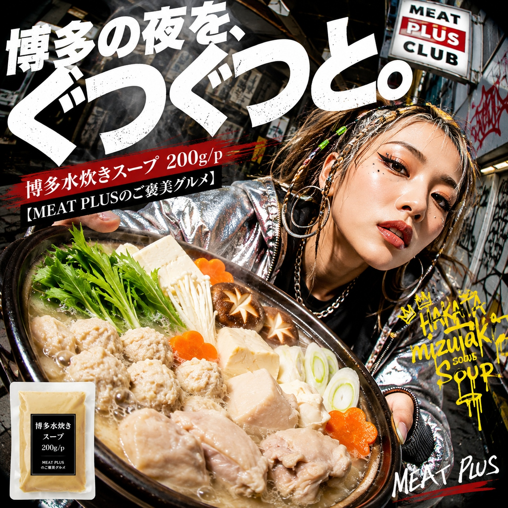
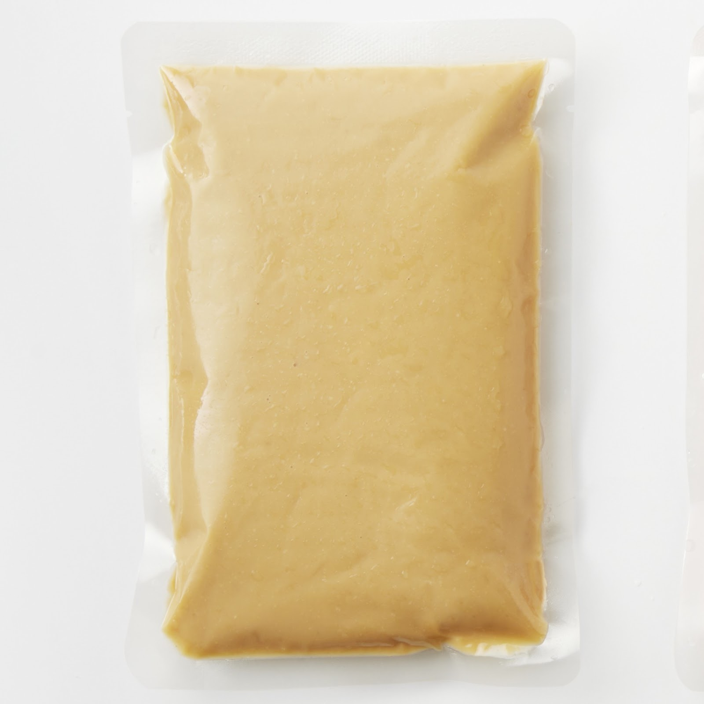
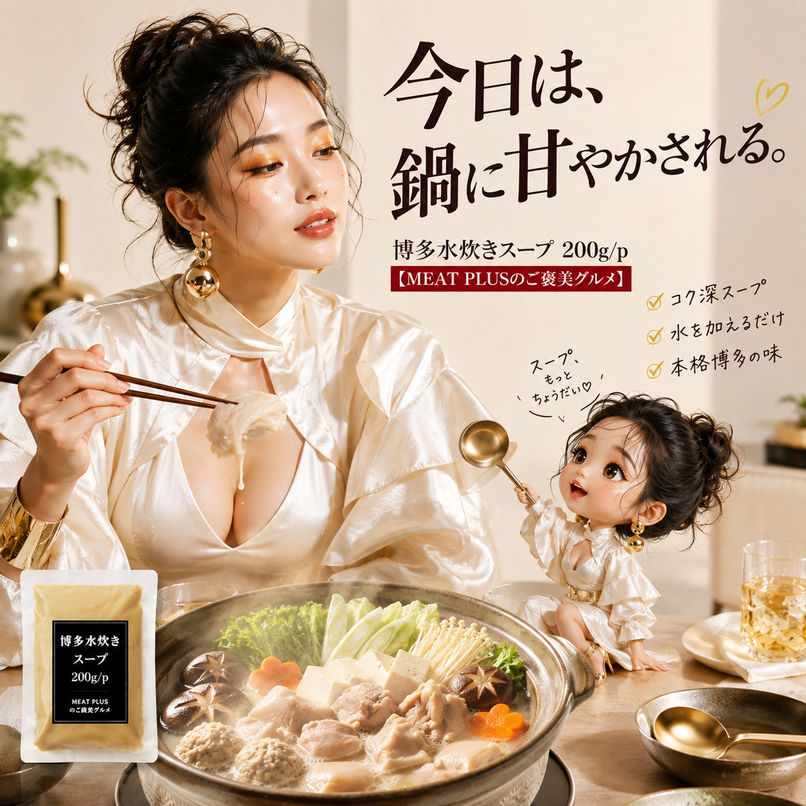

SCENE 01

i 惣菜・加工品
【鶏の旨みが溶け込む、本場博多の濃厚白濁スープ。】
今夜は、心も体も温まる本格的な水炊きはいかがですか。鶏と豚の旨みをじっくりと炊き出し、生姜の風味をきかせた、濃厚でクリーミーな白濁スープです。まるで博多の専門店で味わうような、奥深いコクと香りが口いっぱいに広がります。使い方はとても簡単。1パックを水600ccで薄め、お好みの鶏肉やお野菜と一緒に煮込むだけ。あっという間に、食卓が華やぐごちそう鍋の完成です。鶏肉の旨みが溶け出したスープは、〆の雑炊やラーメンも格別。最後のひと口まで、専門店の味を心ゆくまでお楽しみいただけます。常温で保存できるので、ストックしておけばいつでも手軽に本格鍋が味わえます。このスープ一つで、いつもの食卓を特別なひとときに変えてみませんか。
公式サイトへ移動します。価格・在庫・配送条件は移動先で最終確認してください。


PRODUCT INFORMATION
水あめ、チキンエキス、食塩、ポークエキス、生姜、チキンオイル、酵母エキス/酒精、調味料(アミノ酸等）、結晶セルロース、増粘剤（キサンタン）、（一部に鶏肉・豚肉を含む）
FAQ
1パック(200g)を水600ccで希釈し、約2〜3人前でお楽しみいただくのが目安です。召し上がる方の人数や具材の量に合わせてご調整ください。
未開封の状態では直射日光を避け、常温で保存いただけます。開封後はお早めにお召し上がりください。賞味期限内に使い切れない場合は、冷凍庫で保管いただくと品質が長持ちします。
MEAT PLUS OFFICIAL SHOP
仕入れ・加工・梱包・発送まで自社で行うMEAT PLUSの公式オンラインショップでご注文いただけます。
公式オンラインショップで購入する